Lesson n. 5:3D Scanning and Printing
This week we had two assignments:
- Design and 3D print an object (small, few cm) that could not be made subtractively;
- 3D scan an object (and optionally print it);
Design and 3D print
As a first exercise of the module of this week i decided to make a ball-bearing, to realize the actual mechanical quality of the print material, the PLA.
The process for the production of a 3D object can be divided into 3 major categories:
- Modeling;
- Slicing;
- Printing.
1. Modeling
I made a drawing fairly basic, but paying attention to the dimensions to make it possible to use after printing.
I designed a sphere and then i made the polar series to develop along a circumference. Then i designed 4 toroids, 2 internal and 2 external, which i have subsequently joined to create the support structure.
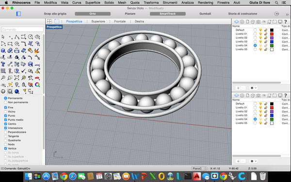
Here you can see a cross-section of the ball-bearing:
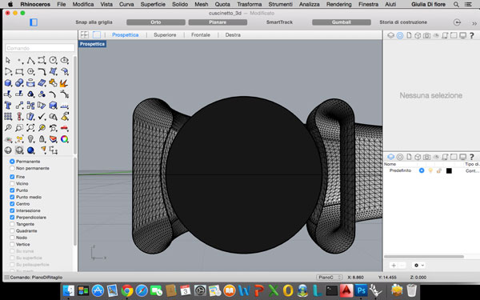
After having finished the drawing, i exported the model as .stl file and then import into an other software for the slicing phase.
2. Slicing
After you have created our 3D object using a modeling programs, we need to convert the drawing into a language that is understandable by the 3D printer: this operation is defined as "slicing".
With the slicing, thanks to a series of parameters set by the user, the software in practice, converts a solid .stl in motion instructions to the printer 3D.
There are many software that do this kind of operations, one of this is Cura.
I have choose Cura because it's very simple and is very intuitive, and allows you to obtain excellent results by acting on a number of essential parameters.
It is also open source: Cura can be downloaded from the website of the Ultimaker and is available for all OS including Windows, Mac OS and Linux.
The main screen of Cura is divided into 4 main parts:
- Basic: In this section there are the basic configurations for the printing of an object that usually vary according to the object that we must print;
- Advanced: In this section instead of that there are advanced configurations for the creation of the machine code, which after you have set are more rarely change them;
- Plugins: This space is dedicated to plugin for Cura, for example to change extrusion temperature after a tot is the number of layer;
- Start/End-GCode: In this section you can configure to our liking the header and the end of the GCode that will be generated.
So in my case, after importing the file in .stl care, I only changed some parameters of the Basic tab:
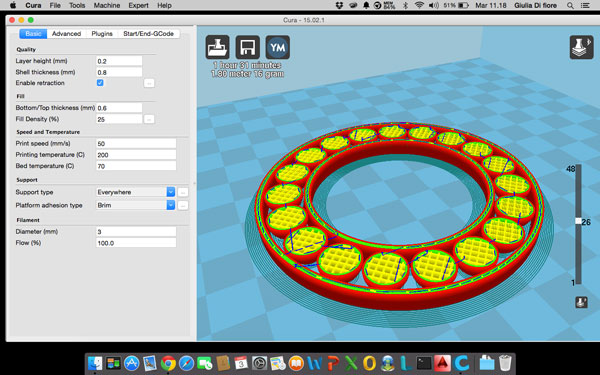
Cure is able to estimate the time spent and the amount of material used for printing, and update it in real time based on the settings that you set.
3. Printing
Once finished setting the parameters, you export the g-code and via an SD card you import it into the printer 3d. After imported the g-code into the 3d printer, you have to wait that the temperature of the "nozzle" and of the "bed" reach the levels you set on the g-code, after that the printer start working.
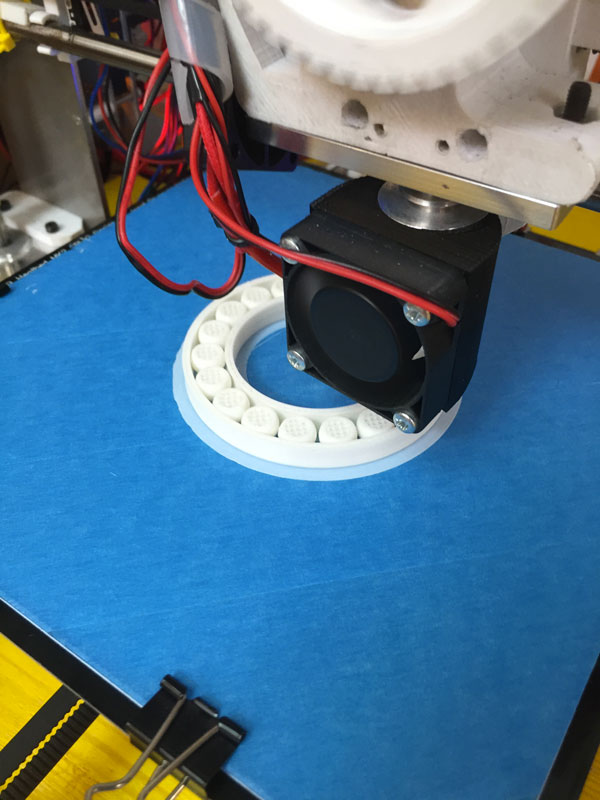
After 1 hour and 16 minutes the final result is this:
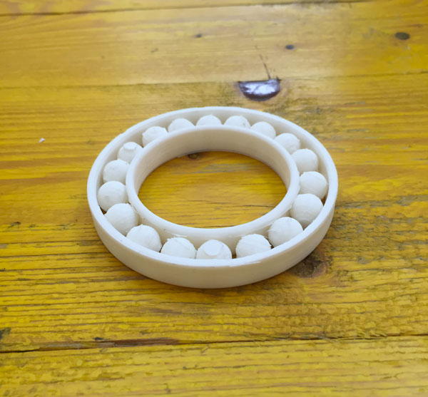
Final Consideration
The final result obtained after the print has some problem: the balls at the bottom (the one laying on the bed of the 3d printer) have come flat and also remove the support material from the inside of the bearing is not simple.
If i had to redo it, in the future, a good measure would be to replace the balls inside with a different shape, which allows to avoid the problem of flattening of the lower surface (for example a cylinder, like in the example below).
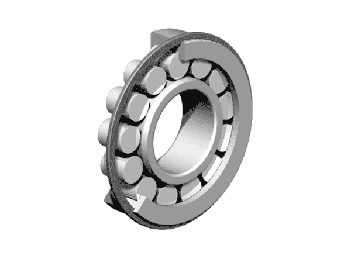
3D Scanning
During the lecture we saw many techniques and software for the 3D scanning. After analyzing all the possibilities I have focused on the use of Kinect, the camera for the Xbox, which mounts inside an RGB camera, double depth sensor infrared composed of a laser scanner and an infrared sensitive camera to the same band.
These features make it an excellent alternative to expensive 3d scanner that is available commercially.
As software for control and data acquisition from Kinect, instead, I chose Skanect.
Skanect turned out to be a good program and easy to use (we used the Pro version, as the Free version allows you to export a maximum of 5,000 faces).
My goal was to create a scan of my face. After the first tests with my mates, we understand that for best results when scanning is better to hold the Kinect and to move the object, so we set the Kinect to a tripod and use a swivel stool to allow us to turn.
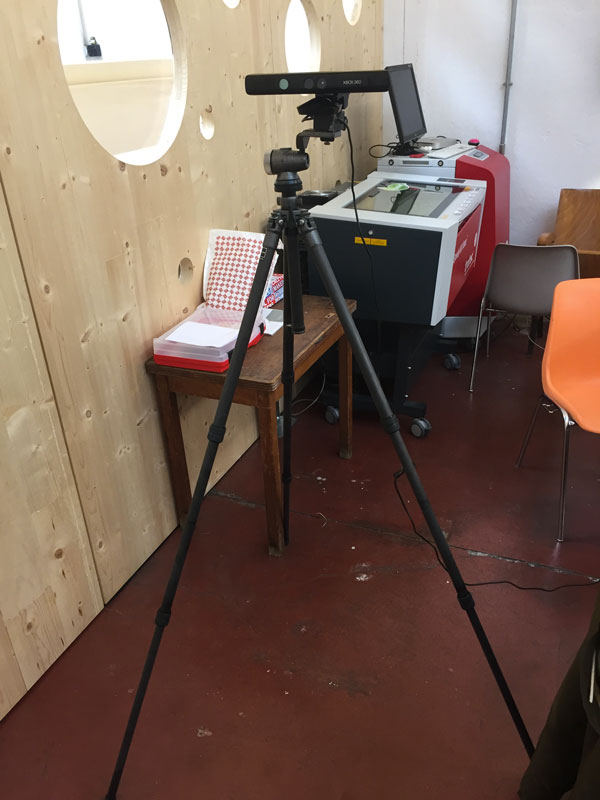
The method we used was effective, and the result obtained with Skanect was more than satisfactory.
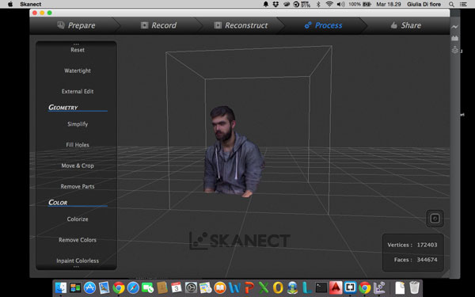
Be noted that the result would not have been possible with the Free version: the number of faces obtained whit the Pro version are approximately 344000, with the Free version would be reduced to 5000 (85% less).
Since the mesh obtained by scanning from Skanect was rather complex and heavy I imported into Blender to simplify it, remove some imperfections and eliminate the excess points.
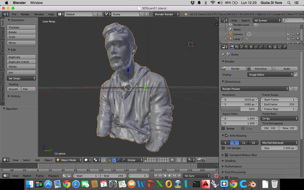
After re-exported the mesh from Blender, I imported in Netfabb Basic to simplify it further and for cut the lower part in excess.
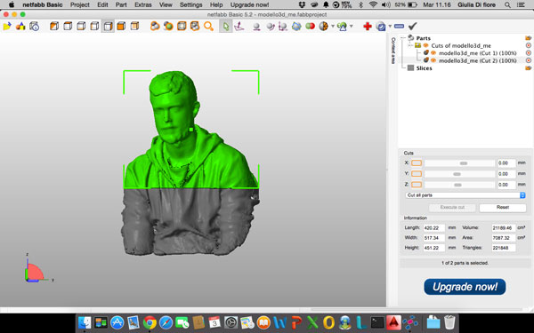
As the last step, I imported the mesh in Rhino, I used the command "Reduce Mesh" and I added a solid base to face the bust.
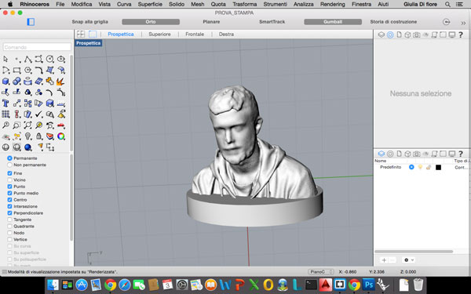
After finishing process the mesh, I imported into care, I added the printing supports and I exported the g-code.
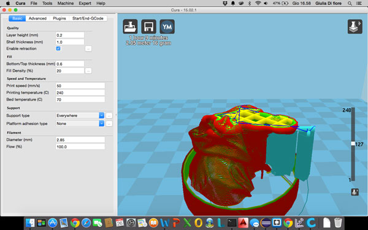
Then I import them into the 3D printer and lunch it.
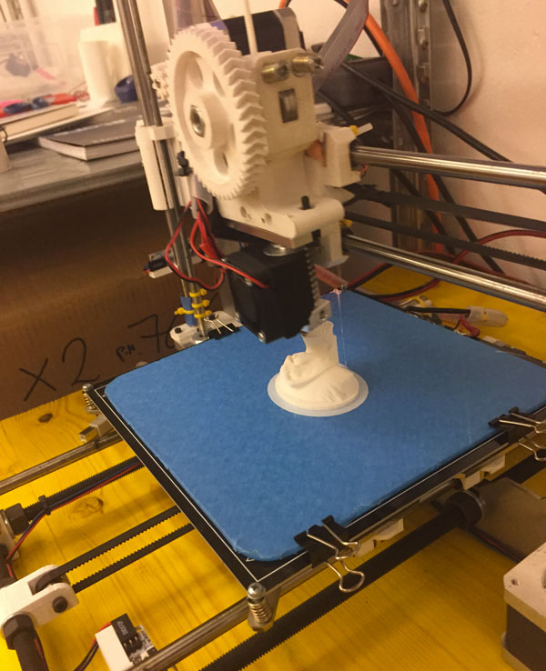
When the printing process is finished i spend some time to remove the support material
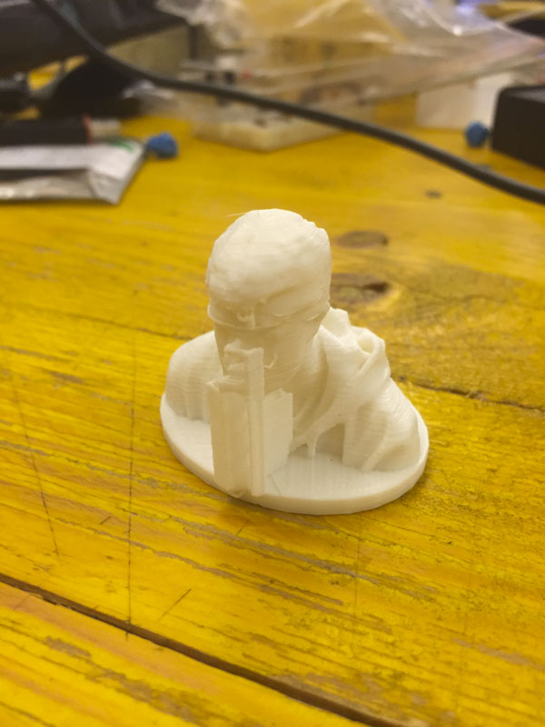
and after remove it, thi is the final result: